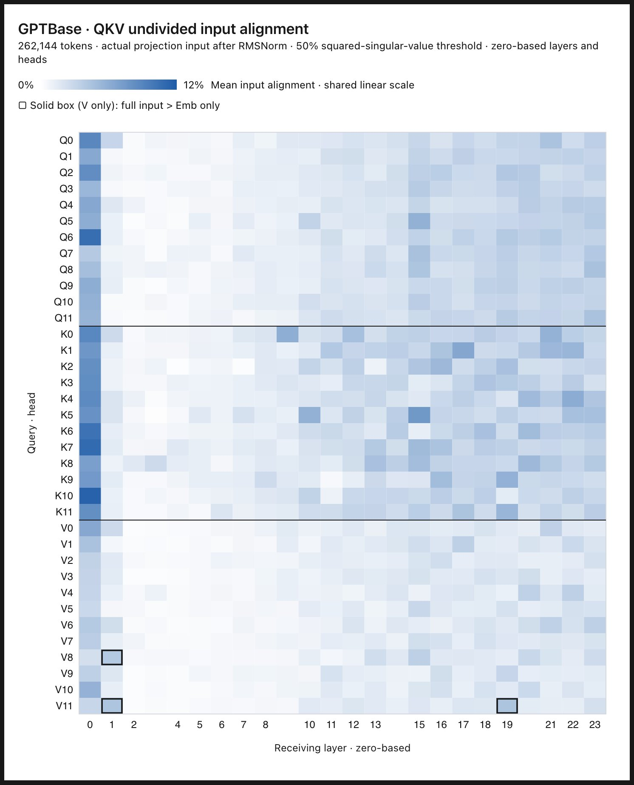
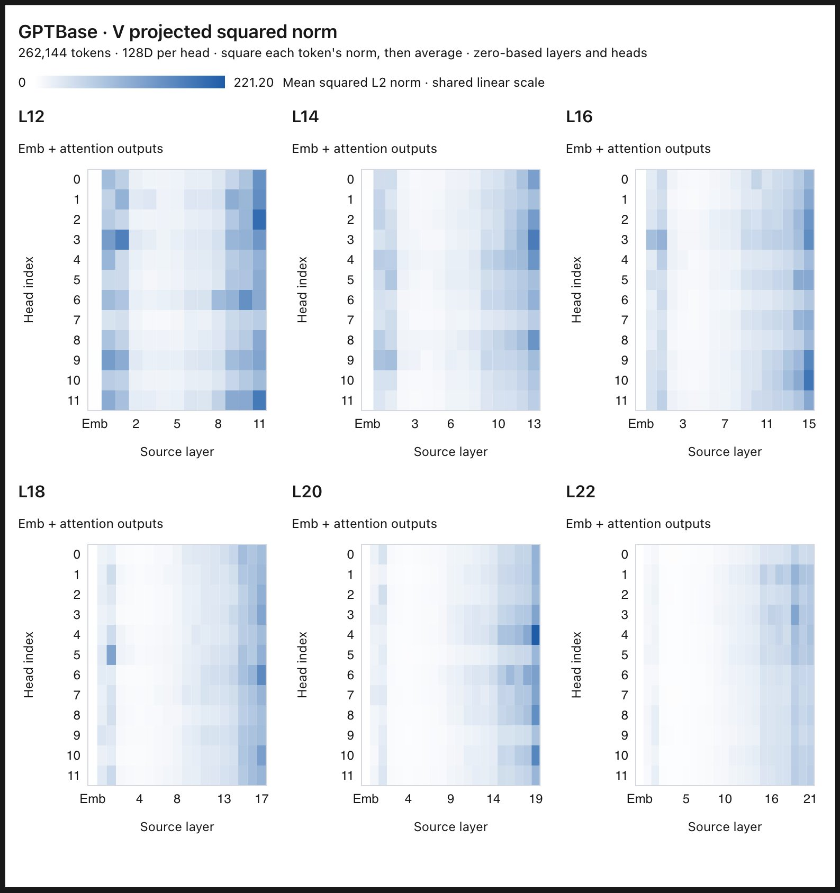
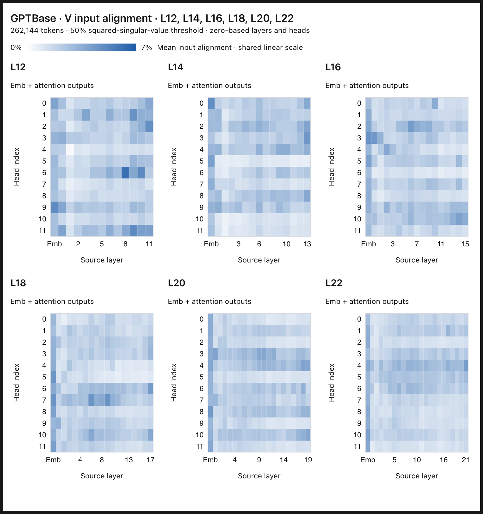
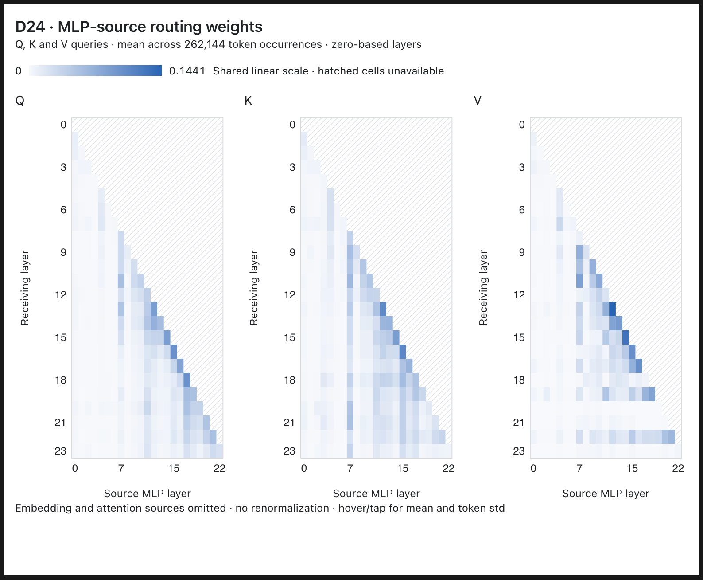
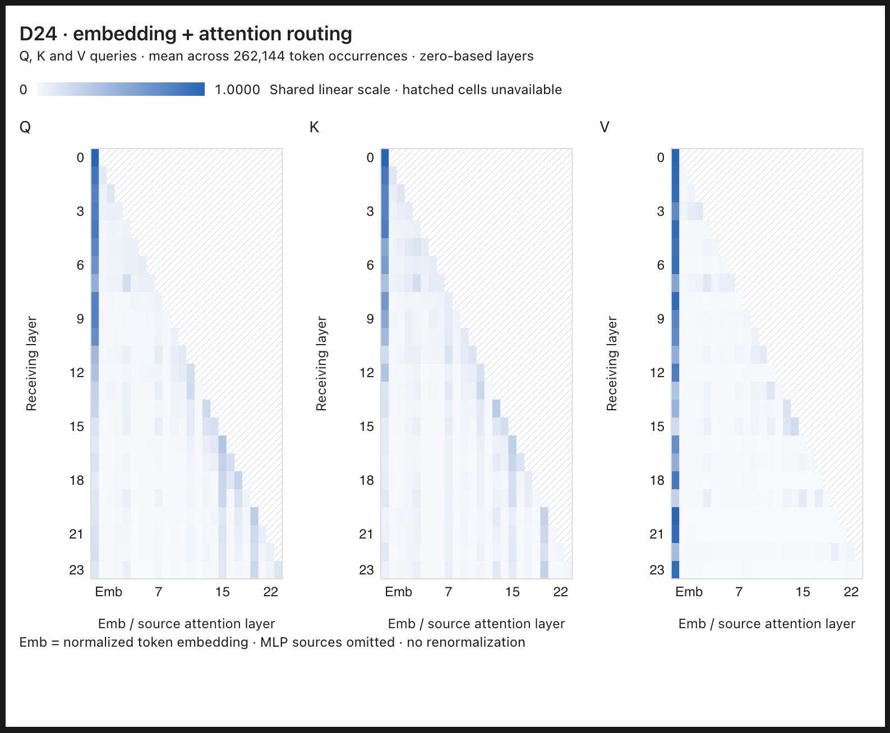
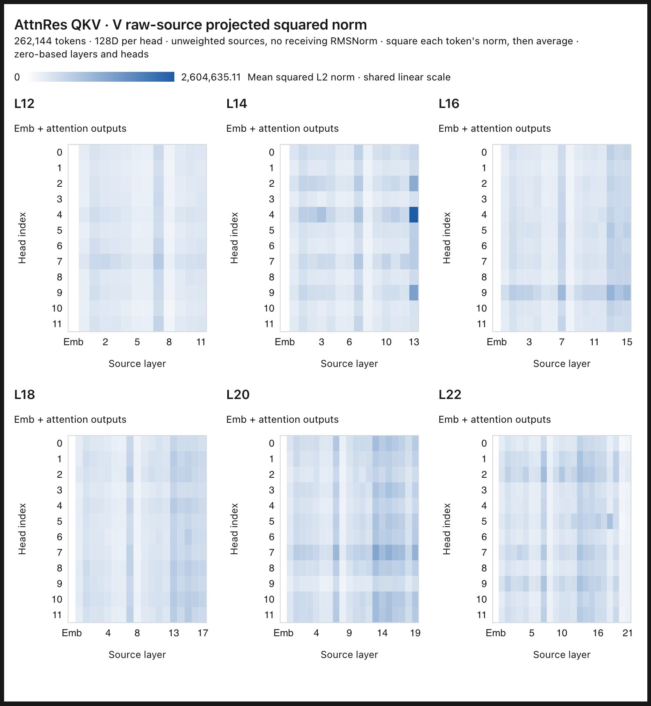
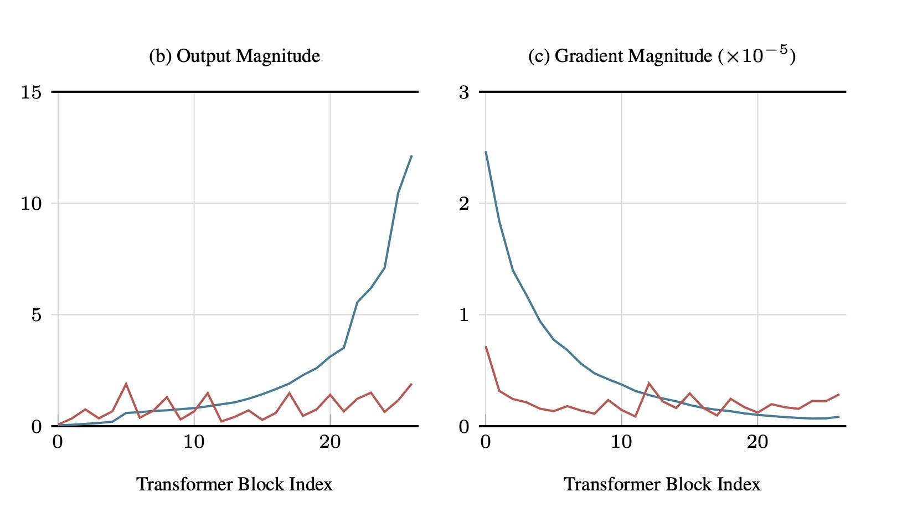
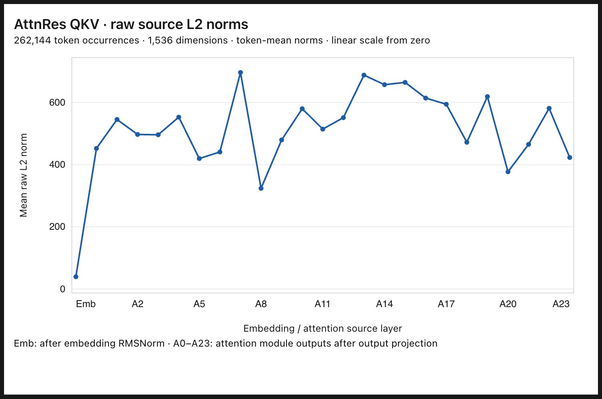

The importance of token embeddings to value vectors
October 24, 2026
I think it is only partially useful, when we attribute how "important" each prev layer output is to a following layer, to look at their norms or an associated scalar weight (like Attn Res). What this view misses is that each matrix has privileged input directions -- if an input has a larger projection on those directions, it will affect the norm of the output much more significantly than another input with the same norm.
As a result, in a standard transformer of 780M, I break down each W_v/W_q/W_k matrix in each attention head across layers by input directions aligned with their singular values. These will be what the matrices want to "look for" in an input. Then, I feed each previous layer output, including the token embedding, into each decomposed matrix, to record how much relative to its norm does it project onto those top input directions (accounting for 90% of the squared singular values). This tells us whether any layer matters particularly for Q, K, or V.
My finding is that while no layer matters particularly in terms of direction for Q or K, the token embedding matters significantly for V, across all layers. This is very illuminating because our prev EMNLP paper, https://arxiv.org/abs/2606.02780, uses ablations and validation losses only to reach the same conclusion. If we just look at the norm of the token embedding, it does not stand out among all layer outputs, yet it creates an outstanding projection to almost all W_v matrices' top input directions.
To show that this large projection is not accidental, we can plot how much each W_v's input directions are concentrated. We find that it is decently concentrated -- 80% of directions accounting for 90% of squared singular values, so an unusually large projection does mean token embeddings have privileged information.
Ongoing work.


October 25, 2026
I think it is a fundamental conflict in standard transformers that although its value matrices are "looking for" token embeddings as inputs, token embeddings end up having minimal contributions.
We can clearly see that value matrices are looking for token embeddings, because among all layer outputs that can go into the residual stream, only the token embedding consistently project a large portion of its norm onto top input dimensions of value matrices. In fact, if we compare how much the token embedding vs the complete residual stream projects itself onto value matrices, token embeddings across heads and layers almost always have a larger projection.
However, we can also see that token embeddings are not contributing much to value vectors, if at all. If we compute the squared norm of the output of value matrices giving only token embedding vs other layer outputs, we find that token embedding has the most negligible contribution.
This creates an intrigue -- are there architectural constraints pulling embeddings back in the hidden space? We believe so, from various places -- such as the fact that embedding is the only component in the residual stream that is layer-normed, before adding to the stream.
Ongoing work.



October 26, 2026
I previously used singular value decomposition to demonstrate that in standard transformers, token embeddings highly align with value matrices' top input directions. But there is a more explicit demonstration -- training an attention residual model, but for QKV separately.
Whereas standard AttnRes learns a query for each layer to compute a weight combination of previous layer outputs, an AttnResQKV model learns one for each of Q, K, and V matrices, (and MLP). As a result, we can explicitly see whether the model is motivated to upweight / downweight specific layer outputs for the current QKV matrices.
We find that for both Q and K matrices, the first half of layers upweight token embeddings substantially. But more importantly, V matrices consistently upweight token embeddings across layers, to the point that other layers have any weights. The max attn score here can even be rounded to 1. This shows independently of the SVD analysis that, for transformer architectures, token embeddings are what value matrices want.
However, this does not prove that AttnResQKV can make sure of token embeddings, just like in standard transformers, we find that despite its high alignment, token embeddings have minimal output norm in value matrices. Therefore we need to do the same SVD + output norm analysis to establish its real contribution. If on a second model we find another alignment vs contribution discrepancy, it might signal limitations of transformer architectures.
For context. The importance of token embeddings to value vectors is already pretty established, such as in Value Residual Learning https://arxiv.org/abs/2410.17897, nanochat arch, and my paper https://arxiv.org/abs/2606.02780. However, all these work are ablation-heavy, so they kind of stumble upon this conclusion. The more interesting question to me is what fundamentally constrains transformers from using it properly without manual arch design, and whether we can therefore discover something much deeper.
Ongoing work.


October 27, 2026
As I take it to be a central conflict in transformers that value matrices want token embeddings but cannot get them, I want to see if an AttnRes style model can "get them" by learning per-layer weights. But still, token embeddings make no contribution to their value matrices. This reveals a fundamental constraint in transformer design -- that token embeddings are forced to have tiny norms.
In the AttnRes model, we can see that although value matrices learn very large (in softmax attention like weights, that means close to 1) weights, their contribution to the value vector output norm is tiny. This means that even with the ability as well as the motivation to upweight token embeddings, they still cannot have an impact.
If we plot the L2 norm of each layer output, it is pretty evident why. We do norm(emb) immediately before the first layer, so token embeddings will have constant L2 norm equal to hidden_size. By contrast, later layer outputs do not have normalized length, so they become unbounded and can surpass token embeddings' norms.
In AttnRes-style model, both the paper and my experiment show that aside from the token embedding, other layers now have similar norms, instead of the exponential blowup in standard transformer. Yet because token embeddings are normalized, they will be instantly overwritten by any subsequent layers.
It is therefore a good experiment to see -- if AttnRes style model learn unbounded scalar weights for token embeddings, will it be very large and how large will it be? It will be pretty cool if it does become large and solve our no-contribution problem. That will be the call to do some arch mod.
Ongoing work.




Citation
@misc{he2026tokenembeddings,
author = {He, Muyu},
title = {The importance of token embeddings to value vectors},
year = {2026},
url = {https://riddlehe.github.io/blog/importance-of-token-embeddings-to-value-vectors.html}
}